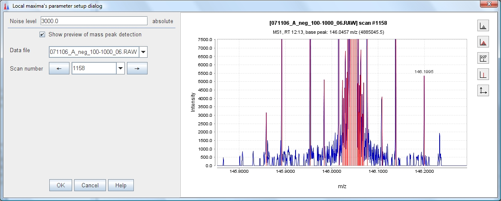

This mass detector represents a very simple method, which detects all local maxima within the spectrum, except those signals below the given noise level. The practical usability of this method on real MS data is limited, but it is useful to demonstrate and understand the functionality of mass detection using the preview plot.
